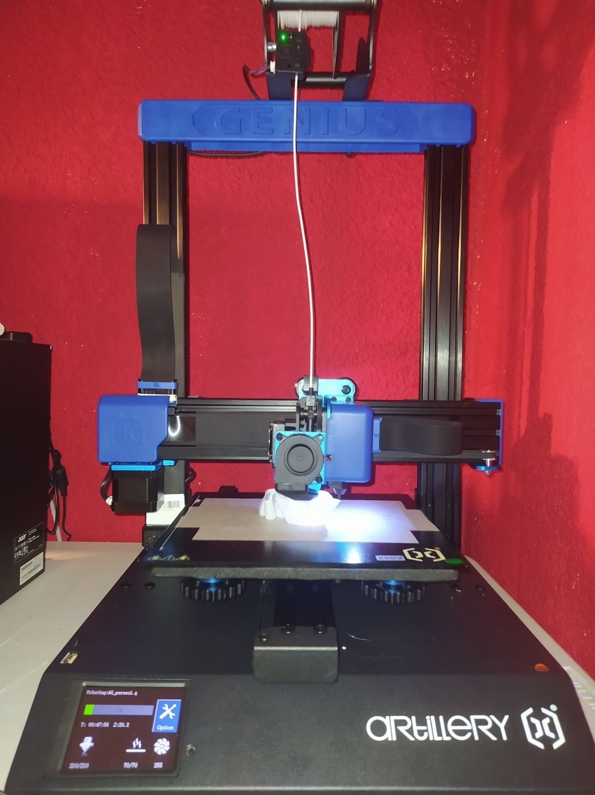

11-02-2022
Tras llevar un tiempo con la Ender 3, decidí apostar por otra impresora que me había llamado en varias ocasiones la atención: la Artillery Genius (Pro).
Esta impresora ofrece de serie mejores prestaciones que sus competidoras por un precio un poco más elevado, ya que incorpora extrusión directa con un fusor volcano y un extrusor Titán; ambas son obviamente réplicas chinas, pero se desenvuelven muy bien . No solo esto, sino que además incorpora un doble eje Z sincronizado, una estructura de aluminio muy sólida (y compacta) ,un sensor que controla el filamento y calibración automática. Cuenta con la versión de Marlin mas actualizada (por lo menos la que me ha llegado a mí) y drivers silenciosos; eso ha sido en lo que he notado más la diferencia, y es que es increíble lo poco que se escucha a diferencia ,por ejemplo, de la Ender 3.
Obviamente no todos es bueno y hay varias cosas que hay que tener en cuenta. En primer lugar a pesar de que la plataforma de impresión se caliente en nada, cuesta que la pieza se adhiera, lo que provoca que se despegue en numerosas ocasiones, interrumpiéndose el proceso de impresión. Como solución temporal podemos recurrir a la laca o cinta de carrocero. En mi caso estoy usando la cinta de carrocero y esperando a pedir un fleje magnético para acabar con este problema. Por otro lado no viene con cables convencionales sino con cables planos; hay que tener mucho cuidado con este tipo de cables ya que debido al movimiento de la impresora se pueden desconectar, aunque en la versión actual del mercado (Genius Pro ya que la Genius normal está descatalogada) viene con una especie de “acopladores” que en teoría evitan este problema.
En cuanto a montarla no hay ningún problema ya que básicamente es atornillar cuatro tornillos (literalmente) porque todo el eje Z y sus pertinentes conexiones al eje X está conectado, junto con el carro del extrusor. Solo hace falta conectar los motores, los finales de carrera (que por cierto, se sustituyen los mecánicos tradicionales por sensores ópticos) y la impresora ya estaría lista para imprimir.

After some time with the Ender 3, I decided to go for another printer that had caught my attention on several occasions: the Artillery Genius (Pro).
This printer offers as standard better features than its competitors for a slightly higher price, as it incorporates direct extrusion with a volcano fuser and a Titan extruder; both are obviously Chinese replicas, but they perform very well. Not only this, but it also incorporates a double synchronized Z axis, a very solid (and compact) aluminum structure, a sensor that controls the filament and automatic calibration. It has the most updated version of Marlin (at least the one that has come to me) and silent drivers; that has been what I have noticed the difference, and it is incredible how little you hear unlike, for example, the Ender 3.
Obviously not all of them are good and there are several things to keep in mind. Firstly, even though the printing platform heats up in no time, it is difficult for the part to adhere, which causes it to peel off on numerous occasions, interrupting the printing process. As a temporary solution we can resort to lacquer or masking tape. In my case I am using masking tape and waiting to order a magnetic strip to solve this problem. On the other hand it does not come with conventional cables but with flat cables; you have to be very careful with this type of cables since due to the movement of the printer they can disconnect, although in the current version of the market (Genius Pro since the normal Genius is discontinued) it comes with a kind of “couplers” that in theory avoid this problem.
As for mounting it, there is no problem since it is basically a matter of screwing four screws (literally) because all the Z axis and its pertinent connections to the X axis are connected, together with the extruder carriage. It is only necessary to connect the motors, the limit switches (which by the way, the traditional mechanical ones are replaced by optical sensors) and the printer would be ready to print.